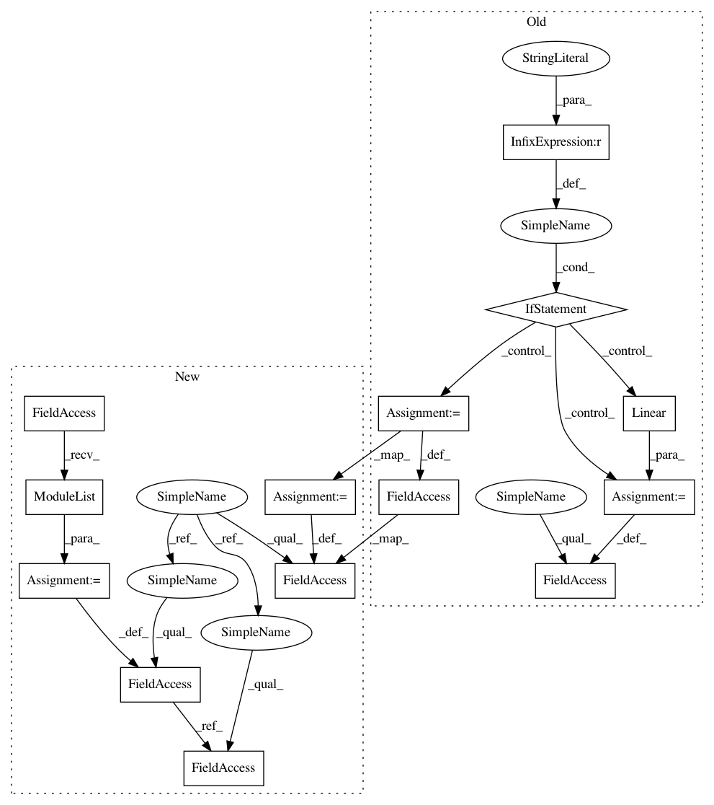

2824bccbb4817467cf63283f5366f4134949d0b4,benchmark/kernel/gin.py,GIN0WithJK,__init__,#GIN0WithJK#Any#Any#Any#Any#,57
Before Change
),
train_eps=False))
self.jump = JumpingKnowledge(mode=mode)
if mode == "cat":
self.lin1 = Linear(num_layers * hidden, hidden)
else:
self.lin1 = Linear(hidden, hidden)
self.lin2 = Linear(hidden, dataset.num_classes)
def reset_parameters(self):
self.conv1.reset_parameters()
After Change
for conv in self.convs:
conv.reset_parameters()
self.lin1.reset_parameters()
self.lin2.reset_parameters()
def forward(self, data):
x, edge_index, batch = data.x, data.edge_index, data.batch
x = self.conv1(x, edge_index)
for conv in self.convs:
x = conv(x, edge_index)
x = global_mean_pool(x, batch)
x = F.relu(self.lin1(x))
x = F.dropout(x, p=0.5, training=self.training)
x = self.lin2(x)
return F.log_softmax(x, dim=-1)
def __repr__(self):
return self.__class__.__name__
class GIN0WithJK(torch.nn.Module):
def __init__(self, dataset, num_layers, hidden):
super(GIN0WithJK, self).__init__()
self.conv1 = GINConv(
Sequential(
Linear(dataset.num_features, hidden),
ReLU(),
Linear(hidden, hidden),
ReLU(),
BN(hidden),
),
In pattern: SUPERPATTERN
Frequency: 3
Non-data size: 14
Instances
Project Name: rusty1s/pytorch_geometric
Commit Name: 2824bccbb4817467cf63283f5366f4134949d0b4
Time: 2019-06-10
Author: ekagra.ranjan@gmail.com
File Name: benchmark/kernel/gin.py
Class Name: GIN0WithJK
Method Name: __init__
Project Name: rusty1s/pytorch_geometric
Commit Name: 2824bccbb4817467cf63283f5366f4134949d0b4
Time: 2019-06-10
Author: ekagra.ranjan@gmail.com
File Name: benchmark/kernel/graph_sage.py
Class Name: GraphSAGEWithJK
Method Name: __init__
Project Name: rusty1s/pytorch_geometric
Commit Name: 2824bccbb4817467cf63283f5366f4134949d0b4
Time: 2019-06-10
Author: ekagra.ranjan@gmail.com
File Name: benchmark/kernel/gcn.py
Class Name: GCNWithJK
Method Name: __init__